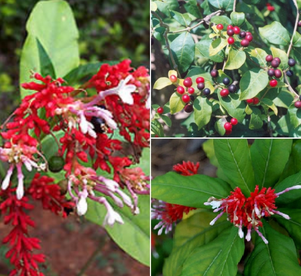
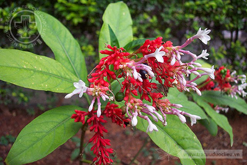

1. Đặc điểm hình thái
Cây bụi nhỏ, cao 0,4 - 0,6 m, ít khi 1 m; phân cành ít; vỏ màu nâu hay nâu xám, nhiều bì khổng. Lá có cuống, dài 1 - 1,5cm, mọc vòng 3, tập trung ở đầu cành; phiến lá thuôn hoặc hình mác dài, nhọn đầu; 5 - 8,5 x 2 - 3,5cm; gân phụ nổi rõ cả hai mặt. Cụm hoa xim dạng ngù hay tán, mọc đầu cành; cuống cụm hoa dài 3 - 5cm. Hoa nhỏ, hình ống, màu hồng tía, hơi phình ra ở 1/3 từ trên xuống; ống hoa dài 1,5 - 2cm; đài 5, cánh hoa 5, hình tam giác tròn đầu, vặn trái. Nhị 5, ngắn, đính phía trong ở chỗ phình ra của ống tràng. Vòi nhuỵ nhỏ, đầu hình đèn lồng. Bầu 2 ô, đĩa ôm quá 1/2 bầu. Quả hạch, gồm 2 phân quả, gần hình cầu, đầu hơi nhọn, gốc dính nhau tới gần 1/2 chiều dài quả. Khi chín từ màu đỏ chuyển sang màu tím đen. Hạt nhỏ, vỏ hạt có vân. Toàn cây có nhựa mủ trắng, nhất là ở lá và ngọn non.


2. Phân bố
Loài có khu phân bố rất hẹp ở Việt Nam (Đắk Lắk); số cá thể ít; nơi sống là bờ nương rẫy và ven rừng thường bị xâm hại, dễ bị rủi ro.